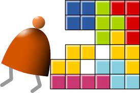
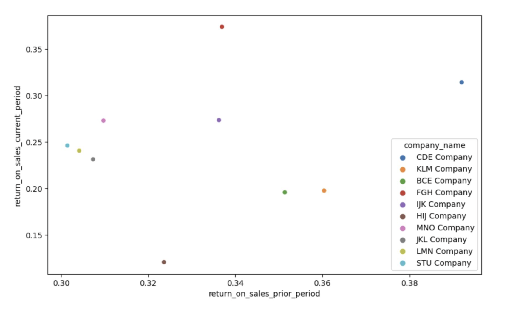

Greetings, I am Tenzin Uden I am a college sophomore interested in data analysis and web development.
About Me
content goes here
Skills
Experience
Leadership
Education
Python
Jupyter notebook, numpy,pandas, matplotlib, Pytorch etc. Experience with OOP, SQL, Linux: experience with ETL, data-wrangling, data-visualization, statistical modeling, Node.js, BigQuery
Programming
Studied data structures, systems architecture, Java, Assembly, and experience with Haskell and Javascript and Metasploit
Data Analysis
YoloV, Homebrew; dept at data annotation and data accuracy testing
Office, G-Suite
Proficient in database management and analysis, documentation and presentation
Languages Spoken
Dzongkha , English , Japanese , Hindi
Interpersonal
Organization, Presentation, Public Speaking, Critical Thinking, Managing Conflict, Documentation
Associated Student of Whitman College
Finance Committee Member
Oversaw a budget of more than $500,000 with precision, applying rigorous financial strategies to maximize efficiency and uphold fiscal responsibility, while conducting research to invest in ESG’s to support budget sustainability Implemented a mid-year budget review, boosting transparency and support for 1,500 students; showcasing strong communication and analytical skills.
Druk Holdings & Investments
Data Analyst & Annotator
Developed an AI model to annotate diverse vehicle and pedestrian movements on the Capital City Highway, utilizing the YOLOv5 algorithm for Custom Objects in Google Colab and Python to process 3,000 real-life traffic data points (.png) within Roboflow. Streamlined the annotation of traffic data (.png), applying labels such as Cars, SUV, Bus, Truck, PickUp, Taxi, and converting them into .json format with homebrew and Roboflow, achieving an 87% precision rate with the YOLO model.
Kirirom Institute Of Technology
Software Intern & Code Camp Facilitator
Facilitated and taught 30 students, python skills; logic building, syntax and fundamentals of computer science using different platforms including Visual Studios Code and Spyder and the passing rate was over 90%. Engaged actively in academic lectures, networked with industry professionals through virtual company interactions, and pursued practical software development projects at an incubation center.
Whitman College
CS 215, Teaching Assistant & Lab Aide
Led weekly 2-hour lab sessions for CS students, clarifying data science concepts through visualizing data in Jupyter using python and pandas and enhancing lecture understanding in a supportive environment. Provided individualized tutoring to 10+ students, aiding with data projects, programming, and logical reasoning skills. Guided 30 students through data-driven problem-solving, focusing on critical thinking and analytical skills.
Whitman College
Data Structures, Teaching Assistant & Lab Aide
Led weekly 2-hour lab sessions for CS students, clarifying data structures concepts through conceptualizing and breaking down code in Java and enhancing lecture understanding in a supportive environment. Guided 25 students in problem-solving through aiding with coding projects, data structure concepts, and logical reasoning skills.
Whitman Baseball Team
Data Analyst Intern
Develop and implement a comprehensive player performance analysis framework, utilizing Python for statistical analysis that will lead to a significant improvement in pitching performance. Implement predictive analytics for game outcome forecasting, enhancing communication and reporting through biweekly strategy sessions with the head coach and weekly meetings with the project manager.
Annual Giving Office, Whitman College
Ambassador
Contributed to maintaining the financial health of the college by engaging with alumni via more than 5000 phone calls, text, on-campus events and secured more than $3000 from 30 plus donors. Articulated the importance of philanthropy in the experience of college students to convince and encourage philanthropists. Utilized knowledge of Excel, Word, and other software to keep track of our database and philanthropic commitments.
Career Center, Whitman College
Student Career Advisor
Collaborate with a team of 5 advisors to support a student population of 1500 to provide career oriented support. Reviewed career-related documents for more than 30 students and contributed to more than 5 projects to increase the accessibility of jobs resulting in 100% outreach of the Career resources at Whitman.
The WIRE
Campus Life Writer
Conducted in-depth interviews with staff, students, and faculty, crafting over 20 compelling articles on diverse campus events and critical issues like human trafficking, showcasing exceptional oral and written communication skills. Amplified article reach via Facebook & Instagram, driving a 50% increase in engagement through strategic online promotion, demonstrating my prowess in articulating and advocating for pertinent topics.
Friends United Football Club
Marketing Head
Launched targeted social media campaigns, raising awareness and securing $140 in sponsorships for football gear and refreshments, demonstrating adeptness in financial mobilization. Collaborated with 2 executives of the Bhutan Football Federation/club team coaches and members to create content for increased reach to boost donor interest, reflecting strong stakeholder engagement skills.
High School
United World College, ISAK Japan
College
Whitman College, USA
My Work
Data Anaytics Projects
Classwork

Nand2Tetris Projects
Computer Systems and Fundamentals Coursework

Project Dell
This was a database management project that I worked on during my final interview with Dell for a Software auditing role as a sophomore student.